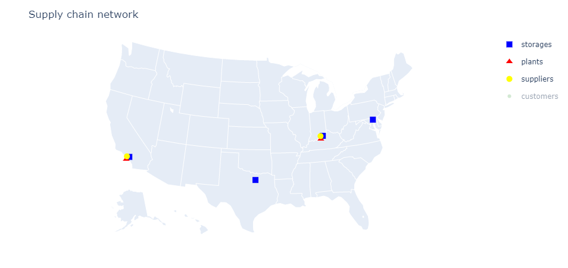

Locations Optimization
In this section we will see how to find the best network to service customer demand. We will consider a set of 40 possible storage locations and a set of 350 customers both distributed throughout the US. We specify the cost of operating each storage location and the cost of shipping the product from each storage location to each customer. Finally we indicate the demand for each customer. Once this is done we optimize the network.
using CSV
using DataFrames
using SupplyChainOptimization
nm = tempname()
url = "https://raw.githubusercontent.com/plotly/datasets/master/2014_us_cities.csv"
download(url, nm)
us_cities = CSV.read(nm, DataFrame)
rm(nm)
sort!(us_cities, [:pop], rev=true)
sc = SupplyChain(1)
product = Product("Product 1")
add_product!(sc, product)
for r in eachrow(first(us_cities, 40))
storage = Storage("Storage $(r.name)", Location(r.lat + 0.2, r.lon + 0.2, r.name);
fixed_cost= 2_000_000 + r.pop / 2,
opening_cost=0.0,
closing_cost=0.0,
initial_opened=false)
add_product!(storage, product; initial_inventory=100_000)
add_storage!(sc, storage)
end
for (i, r) in enumerate(eachrow(first(us_cities, 350)))
customer = Customer("customer $i", Location(r.lat, r.lon, r.name))
add_customer!(sc, customer)
add_demand!(sc, customer, product; demand=[r.pop / 10_000])
end
for c in sc.customers, s in sc.storages
add_lane!(sc, Lane(s, c; unit_cost=haversine(s.location, c.location) / 250))
end
optimize_network!(sc) 0.00 (postsolve)
Nodes 137
LP iterations 8283 (total)
4808 (strong br.)
307 (separation)
433 (heuristics)
Presolving model
370 rows, 1412 cols, 4228 nonzeros
358 rows, 1408 cols, 2812 nonzeros
Solving MIP model with:
358 rows
1408 cols (4 binary, 0 integer, 0 implied int., 1404 continuous)
2812 nonzeros
( 0.0s) Starting symmetry detection
( 0.0s) No symmetry present
Solving root node LP relaxation
Nodes | B&B Tree | Objective Bounds | Dynamic Constraints | Work
Proc. InQueue | Leaves Expl. | BestBound BestSol Gap | Cuts InLp Confl. | LpIters Time
S 0 0 0 0.00% -inf 24600773.83734 9999.00% 0 0 0 0 0.0s
Solving report
Status Optimal
Primal bound 24600773.8373
Dual bound 24600773.8373
Solution status feasible
24600773.8373 (objective)
0 (bound viol.)
0 (int. viol.)
1.21508492157e-08 (row viol.)
Timing 0.32 (total)
0.01 (presolve)
0.00 (postsolve)
Nodes 1
LP iterations 379 (total)
0 (strong br.)
25 (separation)
0 (heuristics)
Presolving model
550 rows, 14120 cols, 42280 nonzeros
430 rows, 14080 cols, 28120 nonzeros
Solving MIP model with:
430 rows
14080 cols (40 binary, 0 integer, 0 implied int., 14040 continuous)
28120 nonzeros
( 0.1s) Starting symmetry detection
( 0.1s) No symmetry present
Solving root node LP relaxation
Nodes | B&B Tree | Objective Bounds | Dynamic Constraints | Work
Proc. InQueue | Leaves Expl. | BestBound BestSol Gap | Cuts InLp Confl. | LpIters Time
S 0 0 0 0.00% -inf 101739940.5999 9999.00% 0 0 0 0 0.2s
S 0 0 0 0.00% 6438710.348196 101439864.8878 93.65% 904 37 0 402 0.3s
S 0 0 0 0.00% 8865592.090628 99975357.80941 91.13% 1570 109 0 475 0.4s
S 0 0 0 0.00% 10227749.83968 99150748.34406 89.68% 2874 252 0 621 0.7s
S 0 0 0 0.00% 10650501.74486 99100595.37456 89.25% 3328 286 0 657 0.8s
S 0 0 0 0.00% 11972927.08379 98291709.08586 87.82% 4622 388 0 759 1.0s
S 0 0 0 0.00% 13192350.59574 97468391.11034 86.46% 5607 490 0 864 1.1s
S 0 0 0 0.00% 13463658.15146 89929794.89151 85.03% 6032 522 0 899 1.2s
S 0 0 0 0.00% 13986190.19234 87742807.66221 84.06% 6826 579 0 965 1.3s
S 0 0 0 0.00% 14418422.4637 85008430.43182 83.04% 7630 639 0 1029 1.5s
S 0 0 0 0.00% 16837933.55554 84017694.58994 79.96% 10286 814 0 1232 2.1s
S 0 0 0 0.00% 18744288.32916 81462972.44722 76.99% 11029 930 0 1373 2.5s
S 0 0 0 0.00% 22834970.49606 81425114.01991 71.96% 11610 1497 0 2071 4.9s
S 0 0 0 0.00% 24078802.3765 77187311.06536 68.80% 11967 1705 0 2344 6.3s
S 0 0 0 0.00% 24171078.12954 74941704.73423 67.75% 11470 1726 0 2371 6.4s
S 0 0 0 0.00% 24225871.102 71458535.85262 66.10% 11809 1743 0 2394 6.6s
S 0 0 0 0.00% 24589023.79534 60473164.42502 59.34% 11949 1850 0 2576 7.1s
SAfter optimizing the network we can visualize the results.
plot_flows(sc; showlegend=false)
In the next example, we optimize a more complete network: we will consider where to build plants, storage locations to service customers and which suppliers to buy from. The customers consume one type of product which is produced by the plants and stored at the storage locations. The plants need a different product as raw material. This product is sourced from suppliers.
The process is similar to the previous example: we setup the network using the built-in concepts, call the optimize_network! function and query the results.
using CSV
using DataFrames
using SupplyChainOptimization
nm = tempname()
url = "https://raw.githubusercontent.com/plotly/datasets/master/2014_us_cities.csv"
download(url, nm)
us_cities = CSV.read(nm, DataFrame)
rm(nm)
sort!(us_cities, [:pop], rev=true)
sc = SupplyChain(1)
product1 = Product("Product 1")
product2 = Product("Product 2")
add_product!(sc, product1)
add_product!(sc, product2)
for r in eachrow(first(us_cities, 20))
supplier = Supplier("Supplier $(r.name)", Location(r.lat + 0.2, r.lon - 0.2, r.name))
add_product!(supplier, product1; unit_cost=1.0)
add_supplier!(sc, supplier)
end
for r in eachrow(first(us_cities, 20))
plant = Plant("Plant $(r.name)", Location(r.lat - 0.2, r.lon - 0.2, r.name);
fixed_cost= 6_000_000 + r.pop / 2,
opening_cost=0.0,
closing_cost=0.0,
initial_opened=false)
add_product!(plant, product2; bill_of_material=Dict{Product, Float64}(product1 => 1.0), unit_cost=1.0)
add_plant!(sc, plant)
end
for r in eachrow(first(us_cities, 20))
storage = Storage("Storage $(r.name)", Location(r.lat + 0.2, r.lon + 0.2, r.name);
fixed_cost= 2_000_000 + r.pop / 2,
opening_cost=0.0,
closing_cost=0.0,
initial_opened=false)
add_product!(storage, product2; initial_inventory=0)
add_storage!(sc, storage)
end
for (i, r) in enumerate(eachrow(first(us_cities, 350)))
customer = Customer("customer $i", Location(r.lat, r.lon, r.name))
add_customer!(sc, customer)
add_demand!(sc, customer, product2; demand=[r.pop / 10_000])
end
for s in sc.suppliers, p in sc.plants
add_lane!(sc, Lane(s, p; unit_cost=haversine(s.location, p.location) / 750))
end
for p in sc.plants, s in sc.storages
add_lane!(sc, Lane(p, s; unit_cost=haversine(p.location, s.location) / 750))
end
for c in sc.customers, s in sc.storages
add_lane!(sc, Lane(s, c; unit_cost=haversine(s.location, c.location) / 250))
end
optimize_network!(sc) 0 0 0 0.00% 24758957.1321 55874286.90037 55.69% 12103 1892 0 2660 7.5s
S 0 0 0 0.00% 24783884.94637 53465052.41444 53.64% 10846 1897 0 2701 7.7s
S 0 0 0 0.00% 25512735.12634 34884898.60282 26.87% 11854 2009 0 2993 9.0s
Nodes | B&B Tree | Objective Bounds | Dynamic Constraints | Work
Proc. InQueue | Leaves Expl. | BestBound BestSol Gap | Cuts InLp Confl. | LpIters Time
L 0 0 0 0.00% 25583793.79267 25592017.83734 0.03% 11977 2015 0 3115 9.8s
Solving report
Status Optimal
Primal bound 25592017.8373
Dual bound 25592017.8373
Solution status feasible
25592017.8373 (objective)
1.52411416821e-12 (bound viol.)
6.17416232345e-16 (int. viol.)
1.98997440748e-09 (row viol.)
Timing 10.50 (total)
0.11 (presolve)
0.00 (postsolve)
Nodes 1
LP iterations 3425 (total)
34 (strong br.)
2713 (separation)
247 (heuristics)
Presolving model
630 rows, 7636 cols, 22696 nonzeros
430 rows, 7460 cols, 22280 nonzeros
Solving MIP model with:
430 rows
7460 cols (40 binary, 0 integer, 0 implied int., 7420 continuous)
22280 nonzeros
( 0.1s) Starting symmetry detection
( 0.1s) No symmetry present
Solving root node LP relaxation
Nodes | B&B Tree | Objective Bounds | Dynamic Constraints | Work
Proc. InQueue | Leaves Expl. | BestBound BestSol Gap | Cuts InLp Confl. | LpIters Time
S 0 0 0 0.00% -inf 188176858.7307 9999.00% 0 0 0 0 0.1s
S 0 0 0 0.00% 16686041.72807 181415766.7453 90.80% 2468 280 0 681 0.6s
S 0 0 0 0.00% 16777867.21308 171345024.3789 90.21% 2842 295 0 697 0.6s
S 0 0 0 0.00% 17895818.26577 166005985.5907 89.22% 4360 362 0 769 0.8s
S 0 0 0 0.00% 20367177.502 158133573.0918 87.12% 4821 378 0 800 0.8s
S 0 0 0 0.00% 25574987.60265 152962074.1095 83.28% 8808 714 0 1211 2.0s
S 0 0 0 0.00% 27219270.36904 150549229.6989 81.92% 10667 920 0 1482 3.4s
S 0 0 0 0.00% 27619584.74351 149674968.037 81.55% 10651 962 0 1541 3.5s
S 0 0 0 0.00% 28909915.99808 148787254.8834 80.57% 10904 1044 0 1705 3.8s
S 0 0 0 0.00% 29427582.85851 111875919.0599 73.70% 11089 1075 0 1836 4.0s
S 0 0 0 0.00% 29580378.43228 101258457.6543 70.79% 10942 1092 0 1856 4.1s
S 0 0 0 0.00% 29889754.98577 95258873.64528 68.62% 10791 1104 0 1981 4.5s
S 0 0 0 0.00% 30000444.33575 90167611.94235 66.73% 11099 1122 0 2109 4.8s
S 0 0 0 0.00% 30011362.69458 87592042.80449 65.74% 11247 1126 0 2116 4.9s
S 0 0 0 0.00% 30058551.74277 82872424.80227 63.73% 10597 1130 0 2135 4.9s
L 0 0 0 0.00% 30141719.17573 46077261.40163 34.58% 10915 1141 0 2164 8.1s
25 3 3 0.00% 30141719.17573 46077261.40163 34.58% 10920 1076 0 17698 13.2s
46 5 13 0.36% 30141719.17573 46077261.40163 34.58% 10967 1076 0 38156 19.2sThe network can be visualized (see below). We can see that the optimal network has two clusters of plants/storage locations; one to service the West coast and one to service the East coast. Additionally two smaller storage locations are used as hubs to reduce overall costs.
